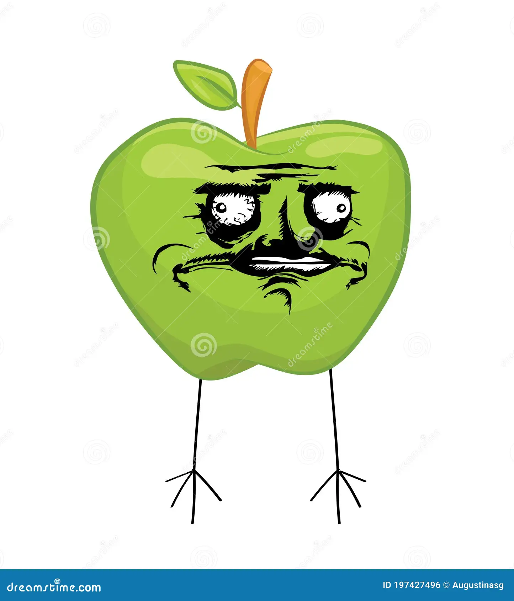

Appels zijn gezond, rond, rood of groen, je kan er heel wat mee doen.
Eet ze op, njam njam
En nog eentje voor extra marge
Deze tekst is niets van appels, maar wel heel VET
Deze tekst is enkel SCHUIN
Volledig onderstreept.
